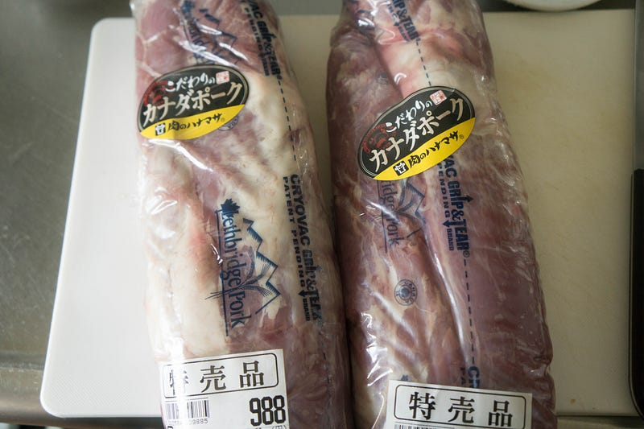
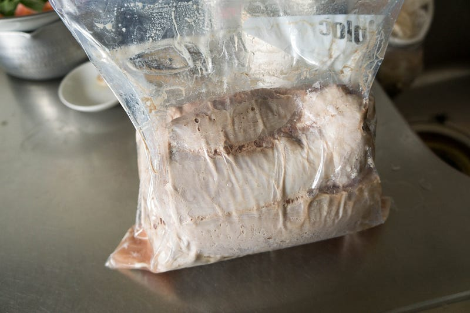
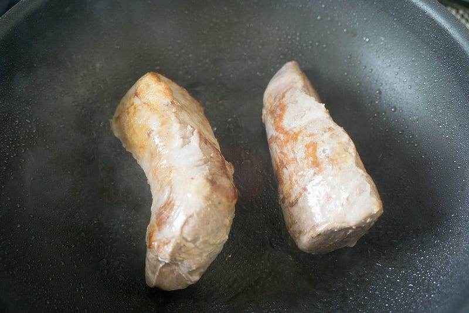
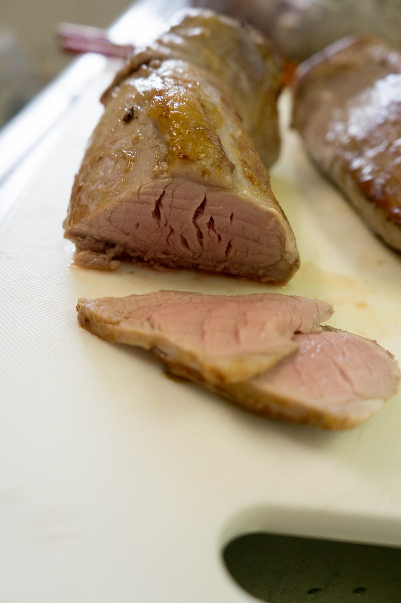
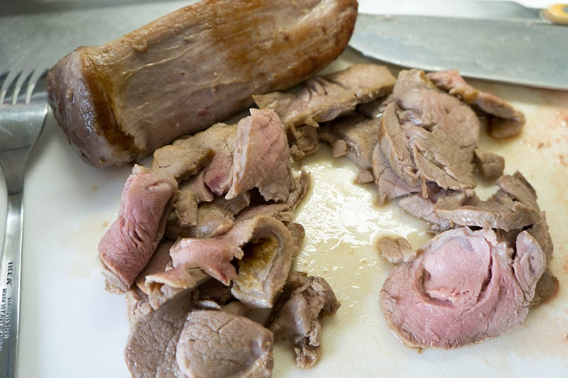
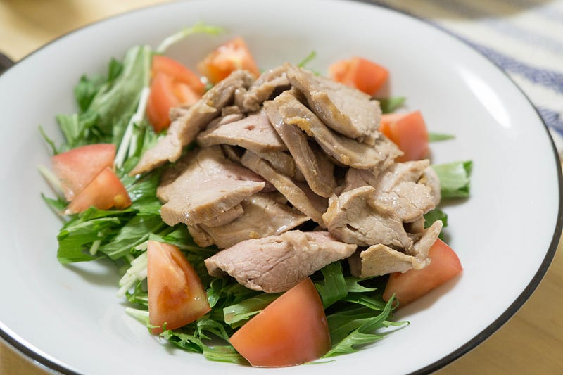

anovaでさっぱり豚ヒレサラダ（？）
anovaでさっぱり豚ヒレサラダ（？）
ハナマサに寄ったら豚ヒレが100グラム99円で、これ以上に安い豚肉は豚こま切り落としとバラ肉の塊しかなかったので買った。ちょっと家庭内の事情が高タンパク質な食事を目指している、というのも理由のひとつ。
折角なのでジューシーに作っておきたいってことでanovaの出番。
New: Anova Precision Cooker - WIFI 2nd Gen (900 Watts)
※ WiFi タイプになります。900W スマホと連動してお鍋の水温をコントロール。どこからでも調理 ポンプ速度：毎分7〜8リットル、360度回転のポンプ アプリで操作可能 設定温度に達したらスマホにお知らせ アプリはAppストアUSな…amzn.to
※ WiFi タイプになります。900W スマホと連動してお鍋の水温をコントロール。どこからでも調理 ポンプ速度：毎分7〜8リットル、360度回転のポンプ アプリで操作可能 設定温度に達したらスマホにお知らせ アプリはAppストアUSな…amzn.to
前回はこちら
さて、安かった豚ヒレは多分色んなモノに使えそうなので作り置きってことで2本、約2kg購入。

豚ヒレは以前トンカツを作ってみて、あれはあれで美味かったが、「これはトンカツではない」みたいな感想になって以来
重量の約1%くらいの塩で、60度2時間。上記のヒレカツの場合、4時間だと食感変わりすぎだったので、今回は2時間でやることにする。
で、ほい：

ちょっと全部一緒くたにしすぎたの失敗。火の通りが若干甘かった。もっと並べ方に気をつけるか、別のバッグでやるべきであった。

なので若干強めに焼く。

薄く切る。お、いいじゃん〜。（この後、念のため家族の分はもう一回軽く火を通した）

つまみぐいなんてしてませんよ。ははは。

最後に水菜とトマトの上に盛りつけ。
写真取り忘れたけどこの上にたっぷり分葱を載せて、ポン酢とごま油をだばだばーっとかける。
モサモサもしてなくてジューシー、そしてあっさりしててうまい。他のおかずもあったけど、一家で300gくらいぺろりと平らげた。
やはり豚肉というのはanovaで変身する材料だなーと思う。